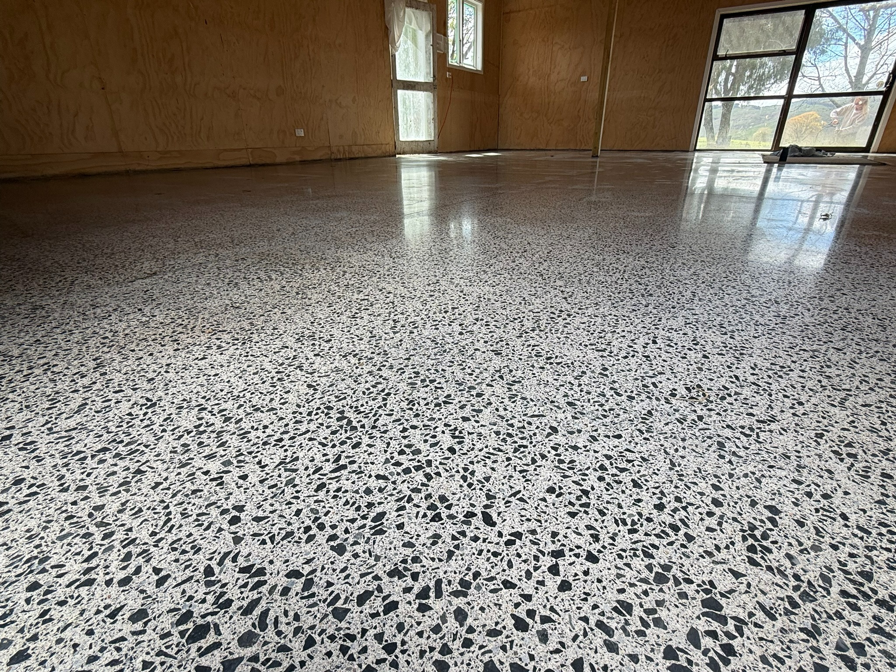

30 Years’ Flooring Experience · Knowledge You Can Trust · Sound, Practical Advice · Free Quotes · ★★★★★ Google Reviews
Concrete flooring · Floorman Waikato
Get an indicative estimate for your concrete floor
Tell us about your concrete floor in four simple steps. Get an indicative price for polishing or grind & seal, then send your details to Jamie for a free quote. Preparation and levelling need a discussion.

A completed Floorman Waikato concrete flooring project.
Some preparation, levelling and poor-substrate work may need Jamie to review the job before a price can be given.